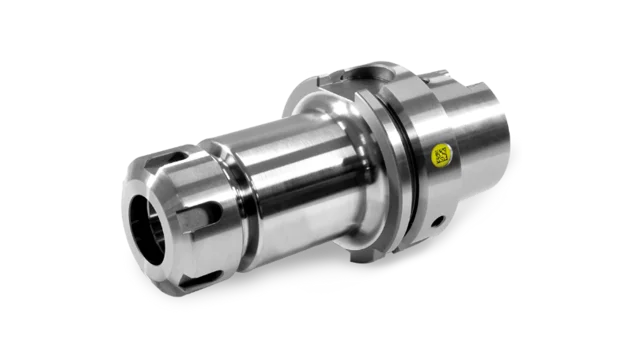
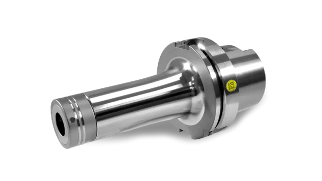
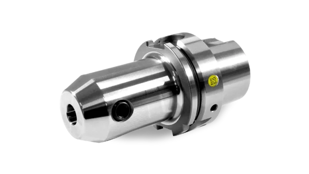
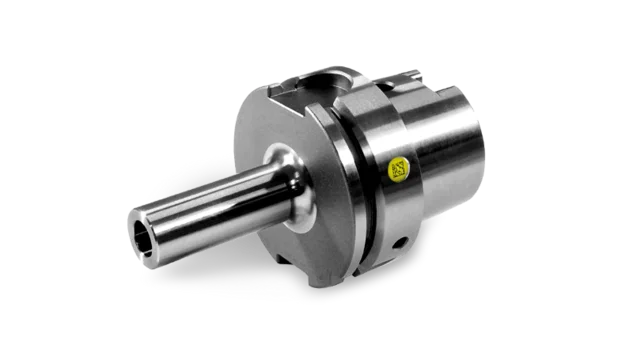
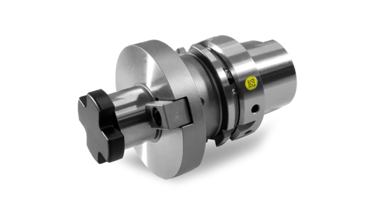
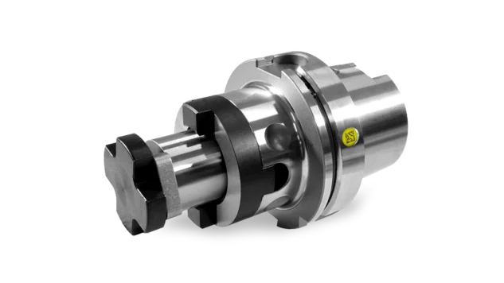
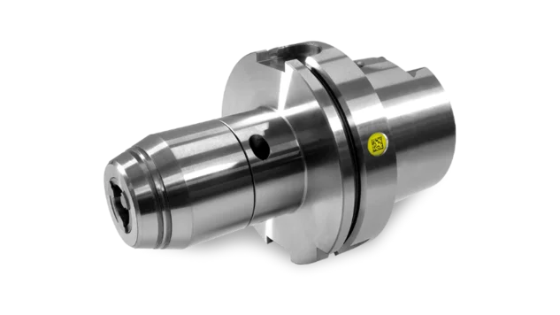
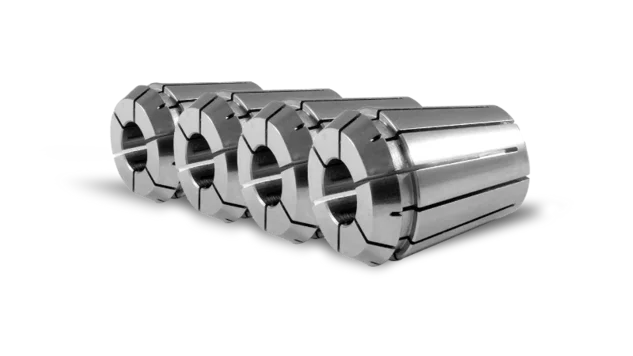
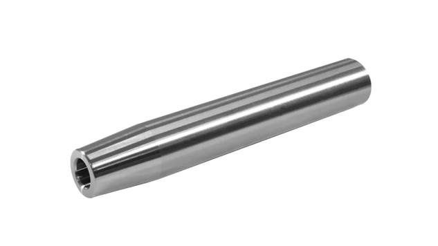
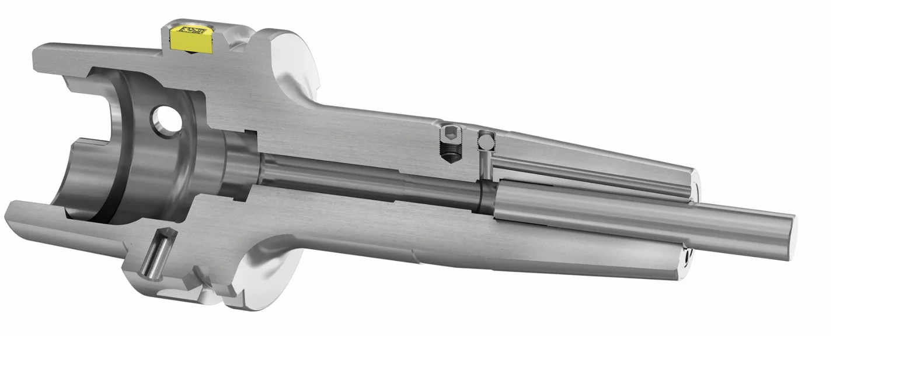

热缩刀柄
用于夹持硬质合金或高速钢圆柱柄刀具。
了解更多选择刀柄类型和机床接口——商城会显示所有匹配的刀柄及尺寸、库存和价格。
所有 ZOLLER Tooling 刀柄均经过精密动平衡，始终优于 DIN 标准。点击即可在商城中打开对应类别。
用于夹持硬质合金或高速钢圆柱柄刀具。
了解更多
用于以 ER 弹簧夹头夹持圆柱柄刀具。
了解更多
用于高性能切削的 HPC 精密 ER 弹簧夹头刀柄。
了解更多
适用于带 Weldon 削平面的刀具——无内冷时的理想选择。
了解更多
适用于带斜削平面（Whistle Notch）的圆柱柄刀具。
了解更多
适用于螺纹连接的铣刀头。
了解更多
适用于带端键槽的铣刀，冷却液直达切削刃。
了解更多
适用于带纵向和端键槽的铣刀。
了解更多
适用于符合 DIN 2288、带扁尾的莫氏锥柄刀具。
了解更多
用于夹持钻头和圆柱柄刀具。
了解更多
用于弹簧夹头刀柄和 HAWK EYE® 的 ER 及 ER «Mini» 夹头。
了解更多
适用于圆柱柄刀具——为深腔加工提供更长的伸长量。
了解更多
密封盘、锁紧螺母等。
了解更多
用于将 RFID 芯片或 ZOLLER »idChip«等数据载体安装在 ZOLLER Tooling 刀具夹头上。HSK-A 空心锥、SK 大锥度和 PSC 多边形锥为标准配置。
用于明确识别您的刀柄，并最大限度延长刀具使用寿命。根据您的要求，我们可将经过动平衡处理且内置集成芯片的刀柄直接送至您的生产车间。
在刀柄的芯片孔中，通过粘合剂确保形成合力，从而实现安全牢固的连接。
用于对标准热缩夹头进行后续精密动平衡。
由于刀具沿刀柄全长施加压力，可确保实现最大的热缩力。
确保夹紧段在夹紧肩部实现最佳滑动，并确保主轴具有出色的张力。由此，夹紧肩的径向跳动最大为10微米（比DIN标准精度高5倍）。
确保径向跳动小于 3 µm。
所有 ZOLLER刀柄均经过精密动平衡处理 — 在 25,000 转/分钟下达到 G2.5 级，或最大残余不平衡量 ≤ 1 gmm，从而确保加工过程中主轴运行平稳，从而延长轴承使用寿命。 您将受益于更长的主轴使用寿命、更优异的工件表面质量以及更长的刀具使用寿命。
确保槽100%居中，在主轴上完美就位，并实现出色的扭矩传递。
确保在更换刀具时，HSK刀柄能够安全松脱。
确保刀具切削刃冷却效果完美，实现最佳的切屑导向，并防止切屑在刀具切削刃处堆积。 冷却液孔的倾斜布置确保冷却液能精准到达所需位置：刀具切削刃，从而实现最佳的切削效果，并延长刀具的使用寿命。
用于将 RFID 芯片或 ZOLLER »idChip«等数据载体安装在 ZOLLER Tooling 刀具夹头上。HSK-A 空心锥、SK 大锥度和 PSC 多边形锥为标准配置。
用于明确识别您的刀柄，并最大限度延长刀具使用寿命。根据您的要求，我们可将经过动平衡处理且内置集成芯片的刀柄直接送至您的生产车间。
在刀柄的芯片孔中，通过粘合剂确保形成合力，从而实现安全牢固的连接。
用于对标准热缩夹头进行后续精密动平衡。
由于刀具沿刀柄全长施加压力，可确保实现最大的热缩力。
确保夹紧段在夹紧肩部实现最佳滑动，并确保主轴具有出色的张力。由此，夹紧肩的径向跳动最大为10微米（比DIN标准精度高5倍）。
确保径向跳动小于 3 µm。
所有 ZOLLER刀柄均经过精密动平衡处理 — 在 25,000 转/分钟下达到 G2.5 级，或最大残余不平衡量 ≤ 1 gmm，从而确保加工过程中主轴运行平稳，从而延长轴承使用寿命。 您将受益于更长的主轴使用寿命、更优异的工件表面质量以及更长的刀具使用寿命。
确保槽100%居中，在主轴上完美就位，并实现出色的扭矩传递。
确保在更换刀具时，HSK刀柄能够安全松脱。
确保刀具切削刃冷却效果完美，实现最佳的切屑导向，并防止切屑在刀具切削刃处堆积。 冷却液孔的倾斜布置确保冷却液能精准到达所需位置：刀具切削刃，从而实现最佳的切削效果，并延长刀具的使用寿命。
我们可按需将每个刀柄经动平衡并牢固粘贴 »idChip«后直接交付到您的生产现场。HSK-A、SK 和 PSC 刀柄标配芯片孔。
DataMatrix 码让每个刀柄都具有唯一标识——在对刀仪上、在 »powerShrink«上以及在机床上。在 ZOLLER，测量、热缩和动平衡均与刀柄相互匹配。

可以。在 MYZOLLER 中创建账户，并在结账时填写公司信息。我们核实后会为您开设客户账户（通常在同一个工作日内），随后自动转交您的订单。订单在我们发出订单确认后生效。
登录后可看到目录价格；作为客户，可看到您客户账户的专属条件。所有价格均为不含增值税的净价。
不需要。这些刀柄适用于任何具有相应接口的机床。配合 ZOLLER 对刀仪、热缩机和动平衡机使用，可发挥最大效益。
即每个刀柄完整的几何数据和主数据。您会随订单一起获得，并可一键导入 ZOLLER TMS Tool Management Solutions 或您的 CAM 系统。
可以。HSK-A、SK 和 PSC 刀柄标配芯片孔——只需在商城中为商品添加已粘贴并经动平衡的 »idChip«。
在 MYZOLLER 的“订单”中：订单确认、交货日期和物流跟踪——实时来自我们的系统。